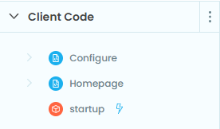

Displaying a popup within Tableau
In this tutorial we’ll add a Tableau pop-up that allows us to set an Anvil variable. To do this, we’ll learn about a few things:
Accessing the underlying JS API
Trigger a pop-up dialogue box from Anvil
Encode URLs in Anvil
Using a startup module instead of a startup form in Anvil
Once we’re done, we’ll have something that looks like this:

You can download the Tableau dashboard here if you’d like to follow along.
To start, you’ll need to create 1 module and 2 forms in Anvil.
startup(module)This is a module that will contain some code that initializes the extension and routes the user to the appropriate page
Homepage(form)This is main extension page, it has the following components:
Button named
btn_config, click bound tobtn_config_clickLabel named
lbl_config_settingLabel named
lbl_home
Configure(form)This is the form that will appear in the popup window, it has the following components:
Button named:
btn_submit, click bound tobtn_submit_clickLabel named:
lbl_configText box named:
tb_config
Once you’re done, the “Client Code” section of the Anvil IDE should look like this:
Because we’ll be showing different forms based on some initial conditions, we’ll use a startup module instead of a startup form.
Let’s start by adding some code into the startup module:
We take advantage of the get_url_hash method to route the user appropriately. As we’ll see in the Homepage form, when a user clicks the “Configure” button get_url_hash will return a dictionary. In that case, we want to open the configure form. Otherwise they’re just opening the extension for the first time so we serve the home page.
Now let’s add some code into the Homepage form.
The homepage has a single button that calls the btn_config_click method on click. That method opens the popup window. The “thing” that is served by the popup window is anvil.server.get_app_origin which makes the url hash a dict (this is handled in the startup module) and the “Configure” form is opened.
Let’s move to the Configure form. Add the following:
Now add the trex file to the Tableau dashboard (see Getting Started) and click the “Configure” button. The popup should appear, and whatever text you enter in the text box will appear once you close the dialog box with “Submit Configuration”.
Here’s what your extension should look like now